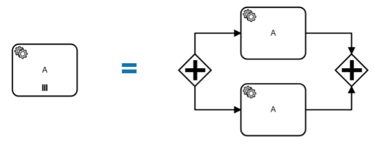

Multi instance
Multi Instance (многоэкземплярная активность) — способ определения повторения определенного шага в бизнес-процессе.
В концепциях программирования мультиэкземпляр соответствует for each конструкции: он позволяет выполнять определенный шаг или даже полный подпроцесс для каждого элемента в данной коллекции, последовательно или параллельно.
Многоэкземплярная активность — обычное действие, для которого определены дополнительные свойства (так называемые multi-instance characteristics), которые заставляют действие выполняться несколько раз во время выполнения.
Следующие действия могут стать действиями с несколькими экземплярами:
Пользовательская задача;
Задача-сценарий;
Подпроцесс.
В редакторе Multi Instance можно установить следующим образом:
{kind=link}
Sequential Multi Instance – последовательная активность с несколькими экземплярами.
Экземпляры выполняются друг за другом.
Когда один экземпляр завершен, создается новый экземпляр для следующего элемента в
inputCollection. |
||
Parallel Multi Instance - параллельная активность с несколькими экземплярами.
Все экземпляры создаются при активации тела активности с несколькими экземплярами.
Экземпляры выполняются одновременно и независимо друг от друга.
|
 | |
Loop – циклическая задача повторяется до тех пор, пока определенное условие либо не будет применено, либо перестанет применяться.
В Ecos не поддерживается.
|
||

|
Ad hoc. Доступно только для подпроцесса. Ad hoc подпроцесс можно использовать, чтобы отметить сегмент, в котором содержащиеся действия (задачи или подпроцессы) могут:
[не реализован]
|
{kind=link}
{kind=link}
{kind=link}
{kind=link}
{kind=link}
Настройки:
Пользовательская задача |
Если выбрано parallel или sequential multi-instance, то задачи будут назначаться на authority из ролей - пользователи записываются в assignee, группы в candidateGroup.
При выставлении флага «Ручное назначение» появляется возможность указать реципиентов:
Подробно о реципиентах
И далее указать настройки множественного экземпяра, которые аналогичны и для Задачи-сценария, Подпроцесса:
|
Пользовательская задача
Подпроцесс
|
Количество повторений цикла/ Loop cardinality - прямое указание числа экземпляров
Условие завершения / Completion condition - выражение, которое вычисляется каждый раз, когда заканчивается один экземпляр
Коллекция/ Collection - коллекция, в которой экземпляр будет создан для каждого элемента
Переменная элемента / Element variable - переменная процесса, которая будет установлена для каждого созданного экземпляра, содержащего элемент указанной коллекции
|
{kind=link}
{kind=link}
Подробно о Multi instance